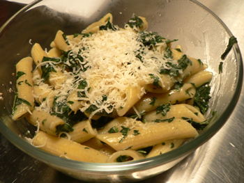

Stinging nettles: not worth eating
I didn’t even know you could eat stinging nettles until I moved to New York. Living here, you hear about all kinds of seasonal produce that you didn’t know about growing up in Pittsburgh or wherever else. My only experience with stinging nettles was getting stuck in fields of them on my grandparents’ land in Maryland, and running as fast as I could to get out, usually just ending up deeper than I already was. (That’s kind of how this meal turned out.) I liked the idea of eating them, and a recent recipe in New York Magazine sounded simple and good.

But this is exactly the kind of food that I have come to view as a complete waste of my time. It’s a recipe for the sake of the main ingredient, which is utterly unappealing, not to mention a pain in the neck to prepare. It’s Greenmarket, “foodie” food, and I don’t like it. I stood there for twenty minutes with plastic bags on my hands (I don’t have dish gloves), pulling hundreds of leaves from their stems, hoping it would all result in a simple, fabulous meal. But nettles taste like something you shouldn’t be eating, like a disgusting, homeless weed. And to think I used full amounts of everything BUT the nettles, of which I only used about half the amount called for. This dish has more nettles than you could eat in your life.
I added a couple tablespoons of crème fraîche just to make it palatable, but I wish I had used any other green leaf: spinach, basil, chard, lettuce; anything would have been better. What a waste of the fresh penne! What a wasted meal! I’m all for simple, three-ingredient dishes, but let them be good, please. Let them be tomates à la crème, or gratin dauphinois. I want ramps, nettles, and other such weeds out of my kitchen; I just have to remember not to be wooed by romantic, attractive recipes.
Comments
I’m glad you tried the stinging nettles so that we don’t have to. I checked out that recipe and it looks to me like it needs some garlic or something to make it any good. Tomates
Well I suppose back in the day if you were a hillbilly and ramps and nettles were the only things that stood between you and losing your teeth you would be happy to have them. I have enjoyed ramps in their various guises but they definitely aren’t worth the $10/lb or whatever Whole Foods charges for them. If I saw a bunch in the wild I’d probably pick them, though.
As for the nettles, however, I agree with Mary; I’m glad you tried this so we don’t have to. I’ll leave them next to the Antietam at Grandma’s cabin.
So funny. Maybe this is why poor Eeyore is always so grumpy?
As for weeds generally, I ate dandelion all spring (readily avail “wild” in Pittsburgh), usually in eggs. I found that the taste ranged from strong to mild, not in direct proportion to the size of the leaf, nor the time in the season, but at random. Mild was great, the strong bitter leaves spoiled the eggs’ flavor entirely.
The same thing happened to me when I made dandelion greens! I was equally disheartened and pissed off to find I made something completely inedible.
Nettles are great in gardening: leaving the leaves to soak in water for up to 2 weeks results in a potent (but stinky…) brew, perfect as plant food or to guard against insects. Judging from your experience, gardening, not cooking, is just where this plant belongs. I have such bad childhood memories of the stuff (and the crazy itches it causes) that I have to admit I was never tempted to try and eat any. I’m sorry to hear about your wasted meal.
I’m sad you didn’t like them! I once had a delicious nettle pizza at Chez Panisse and have been meaning to experiment with cooking them myself ever since. It was so delicious and gave one such a sense of energetic well-being that it made me and two friends sure that there must be some psychoactive compound in nettles. Hmmm… maybe the nettles are different on the West Coast?
What a funny post Leland! I love it when you make me laugh out loud. Sorry your dish was so bad though!
i often find myself not liking an ingredient that is supposed to be hip or trendy or a “delicacy”… and them some snotty “foodie” friend says i just didn’t prepare them right or something so now it’s MY fault and i’m just not cool enough. like i can’t just NOT LIKE a certain ingredient! just because it can be cooked & it showed up on food network doesn’t mean i have to like it!
ooops, excuse the rant :) great post!
Leland, Once when your Mom was expecting you we had nettles for Easter dinner. they smelled like sulphur when they were cooking, they were still quite young, but supposed to be loaded with a vitamin good for expectant mothers. We decided you could have them! Not worth the trouble, though we didn’t pull the leaves off, just cooked the whole mess. They were edible, but again, not worth the trouble. And I’m always fighting them inching into my garden. By the way, they are supposed to be very good for arthritis. Just grab a bunch, with a glove on, and swish them back and forth across your pain. Some way that works. Love ’ya!
What a hilarious post. I have never tried nettles myself but they sound awful. Perhaps they are better used in herbal teas and things like that.
Sometimes when we go to the Greenmarket, my husband says the farmers are mocking us when they charge exorbitant prices for what he calls “a bunch of weeds”!
I purchased fresh stinging nettle yesterday from the organic farm in Bolinas that Prince Charles visited last year. I simply sauteed them in a premium olive oil (McCovoy) and added salt and pepper. I ate them as is and they are wonderful. I think it’s one of the best green vegetables I have eaten and the health benefits are enormous. Perhaps you should try stinging nettles again from a professional chef. It’s possible that the west coast nettles are different, as someone else has suggested?
Boy, if only I could afford some premium olive oil in which to sauté my nettles!
Thanks, everyone, for understanding my troubles. I think it’s okay to decide that certain foods are not worth eating. Spinach is a pain to get clean, but it is worth eating. Fresh pasta is a killer, but it’s more than worth the labor.
I must say I have been tempted to try nettle, as we have many growing down by the creeks, but the prep hasa really put me off. Although, I just tried dandelion as a pesto and it turned out really really well!
YUCK :S.
x
I fully agree with this article. I’ve been told how my Granny used to gather nettles for putting in the soup, but that was because they were incredibly poor in those days. Nobody was proud of eating nettles, or glad to do it. They also used to get up at first light and go to bed when the sun went down, not because it was a cool thing to do. They just had to do it.
Leland, I’m sorry your dish didn’t turn out well. Maybe you just don’t like nettles. I think they are the finest greens on the face of the earth! And I am not one of those organic food types. I don’t buy any organic foods! But I do pick tons of nettles in the spring and stew them up with onions, garlic and bacon. And there is NO other green that can compare to them. I love collards, kale, chard and mustard. Spinnach is ok but it tends to be slippery and bland. There is no question about it, nettles are the best, hands down. They have a meaty texture and a slight flavor of shellfish. When stewed they make a dark brown broth that is rich and delicious. Some say they are loaded with vitamins and are a great tonic which detoxifies the body. Personally I don’t care about any of that. I just love them because they taste so GOOD!!
I made nettle beer once. I have a fairly cast iron palate, but nettles – crikey – they are revolting…..the taste haunted me for days and days afterwards. I think that historically nettles were used for dying ( when you steep them you get a deep red water ), and that’s as much use as you can get out of them. If you want cheap greens to eat, use dandelions leaves.
Who are you people?!
Nettles are delicious and very nutritious.
Don’t put gloves on and do all that work. Simply boil a pot of water, pick up with your tongs and blanch them. Then toss them with some olive oil and garlic and you have a great side dish.
I don’t understand the big fuss. I regularly drink nettle tea, and am experimenting this year with eating them fresh. This is the first time in all my research that I’ve found anything negative about them. If you’ve been raised on a typical North American diet, I suppose these tastes would be quite a change, though I find it interesting that dandelion has been preferred. I love it, but it’s a very bitter plant compared to nettle.
We have become spoiled by our food selections. Sugar, salt and fat are not natural as daily foods, and definitely not in the forms we eat them. It’s unfortunate that we have lost the taste for the best foods for us and the planet.
In these times of food scarcity, and developing distrust towards manufactured foods, I suggest developing a taste for these highly nutritious “weed” foods. They will beat out almost anything in the grocery store and could even save your life one day.
I don’t know what you mean by a “typical North American diet” but I can assure you that Leland was not raised on a diet high in sugar, fat, and salt. We regularly ate Swiss chard, kale, rapini, mustard greens, and a wide variety of other vegetables and fruits. Leland has always been, and continues to be, an adventurous eater, so you can take your superior attitude and shove it.
Sorry about your experience. My personal experience with nettles has been wonderful. A big plant came up with my container herbs and vegetables and it sits on my front porch. I eat the leaves raw—fold it like a taco and put it between molars and the biting action cancels histamine in the needles—and they are extremely high in vitamins and antihistamine (in the leaves themselves).
One other thing to do is to put leaves in a blender and whir. The chopping action releases the anithistamine in the leaves which cancels the histamine in the needles. Make pesto or tea or soup. Don’t overcook. They really taste good.
Suppose it’s important where you get them. From a market standI would think would not be palatable unless they were just picked that morning. Certainly you never want to get them from roadside where chemicals, pollution or pesticides will ruin them. Pick your own.
They do hurt like crazy if stung, but it’s really good to eat raw. Give the leaves themselves a try raw. They’re a very powerful antiinflammatory and give you a remarkable sense of well-being after eating or drinking.
Good luck in your food adventures!
Add a comment